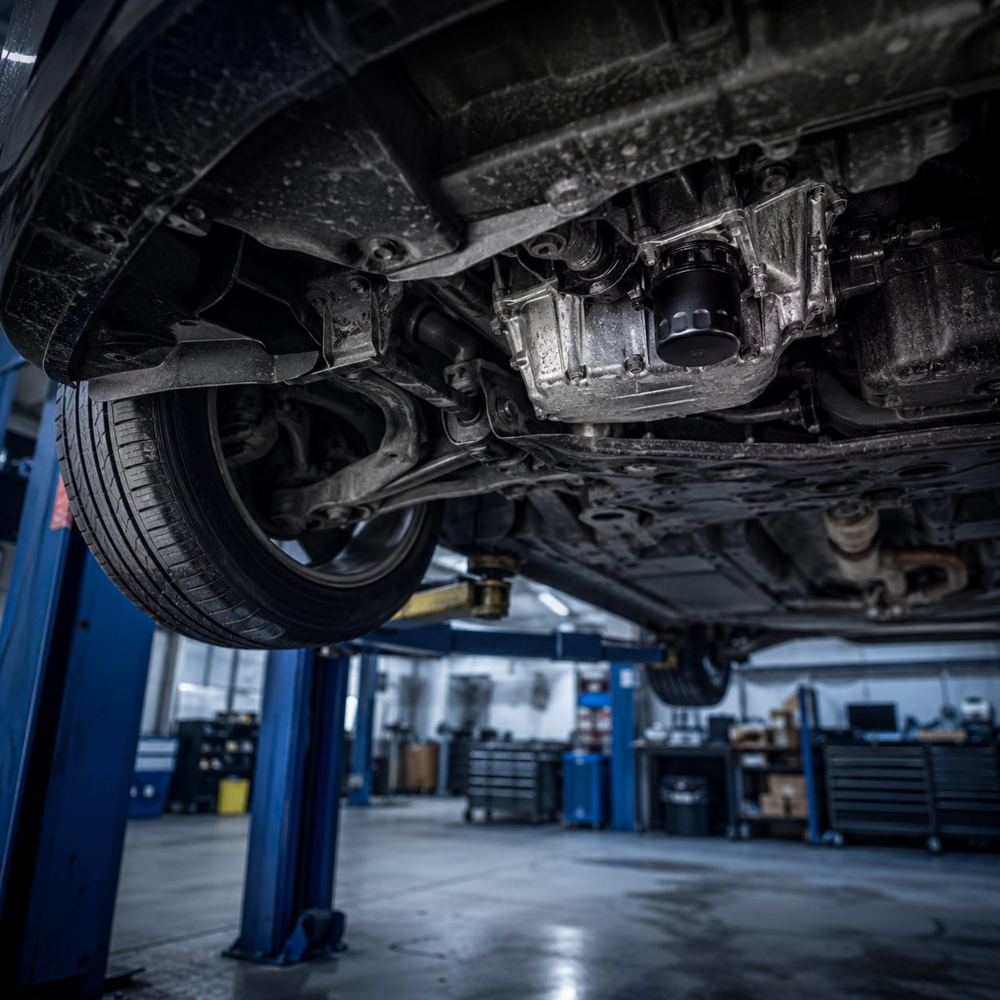

Diagnose & Fehleranalyse
Wir grenzen die Ursache ein, bevor Teile getauscht werden.
MehrWalker GmbH · Hamburg-Hohenfelde
Walker GmbH ist Ihre auf Mercedes-Benz spezialisierte Kfz-Werkstatt in Hamburg-Hohenfelde – mit moderner Diagnose, klarer Beratung und zuverlässiger Teileversorgung als offizieller Mercedes-Benz Teilepartner.

Markenspezifisches Know-how – von der A-Klasse bis zur S-Klasse.
Zuverlässige Ersatzteilversorgung passend zu Ihrem Modell.
Ursachen werden eingegrenzt, bevor Teile getauscht werden.
Sie sprechen direkt mit der Werkstatt – kein Callcenter.
Spezialisierung
Mercedes-Benz Fahrzeuge sind technisch anspruchsvoll. Wer eine Marke jahrelang konsequent macht, erkennt typische Symptome schneller und findet Ursachen, wo andere noch suchen.
Walker GmbH ist eine eigenständige Fachwerkstatt – keine offizielle Mercedes-Benz Niederlassung. „Mercedes-Benz" ist eine eingetragene Marke der Mercedes-Benz Group AG.

Leistungen
Diagnose, Wartung, Reparatur, Klimaservice und Mercedes-Benz Ersatzteile – aus einer Hand und ohne Umwege.
Wir grenzen die Ursache ein, bevor Teile getauscht werden.
MehrWartung nach Herstellervorgaben, sauber dokumentiert.
MehrPrüfung und Reparatur sicherheitsrelevanter Teile.
MehrMotoröl, Innenraum-, Luft- und Pollenfilter.
MehrAnalyse von Sensorik und Steuergeräten.
MehrPrüfung und Wartung der Fahrzeugklimaanlage.
MehrVom Verschleißteil bis zur größeren Reparatur.
MehrAls offizieller Teilepartner – passende Komponenten.
MehrAblauf
Von der ersten Kontaktaufnahme bis zur Abholung – ohne Umwege.
Telefonisch oder über das Anfrage-Formular.
Modell, Symptom, Wunschtermin – kurz und klar.
Fehlerspeicher auslesen, Sichtprüfung, Befund.
Sie hören vorab von uns, was sinnvoll ist.
Erklärung der Arbeiten bei der Übergabe.
Eine gute Werkstatt erkennt man daran, dass man nach dem Termin weiß, was gemacht wurde – und warum.
Kontakt
Telefonisch unter +49 40 225536 oder über das Anfrage-Formular. Persönlich in der Ifflandstraße 71 in Hamburg-Hohenfelde.

FAQ